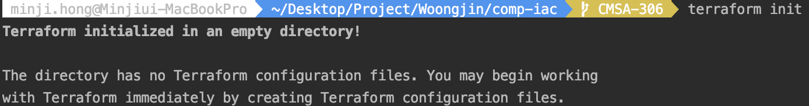
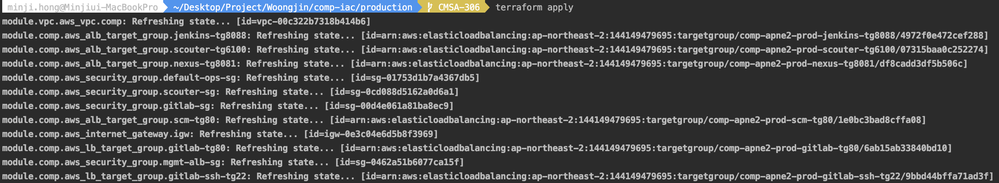

Build
웅진 프로젝트 중 하나인 demo-iac-2tier 프로젝트를 기반으로 git checkout부터 terraform apply까지의 절차가 기술되어 있습니다.
1. checkout
/* make directory */
$ cd ~
$ mkdir workspace
$ cd workspace
/* git clone */
$ git clone https://github.com/pe-woongjin/demo-iac-2tier.git
$ cd ~/workspace/demo-iac-2tier
2. Terraform Build
enviroment 선택
development, stage, production 중 작업할 환경을 선택합니다.
$ cd development or stage or production
init
테라폼 프로젝트 및 최신 플러그인 초기 설정을 진행합니다.
terraform init

plan
어떤 리소스가 생성, 수정, 삭제될지 계획을 보여줍니다.
terraform plan
apply
실제 .tf 파일의 내용대로 리소스를 생성, 수정, 삭제하는 일을 적용합니다.
terraform apply
